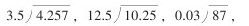
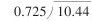

小学数学第八册口算训练之我见 [1]
口算是不借助任何计算工具，依靠思维和语言进行计算并得出结果的一种计算方法。它的特点是方便、快速、灵活，因而在日常生活、工作及市场交易等方面有着广泛的应用。经常进行口算训练，不仅能提高学生的计算能力，还有利于培养学生思维的敏捷性、灵活性、深刻性；不仅能激发学生学习数学的情趣，还有利于促进学生注意力和记忆力的发展。因此，在小学数学教学中必须重视口算的基本训练，不仅低年级要重视，中、高年级也要同样重视。学生学好了口算，将终身受益。
九年级义务教育五年制小学数学第八册口算主要有三方面内容；一是能够口算较小的两个数的最大公约数和最小公倍数；二是口算数目较小的小数四则计算；三是口算简单的同分母分数的加、减。其要求是：“结合本册内容进一步提高学生整数、小数四则运算的熟练程度。”期末要达到整数、小数四则口算（包括能用简便算法的）平均错误率在10%以内，绝大多数的学生达到每分钟做4题。由于本册教材“适当增加概括性的数学知识，进一步加强知识间的内在联系和知识间的逻辑性、系统性”，所以把口算安排在部分练习之中。这就要求教师有意识、有目的、有重点、有针对性地进行经常性的练习。这样才能达到预期目标。为此，在口算基本训练时，要注意以下几点：
一、要使学生懂得口算的算理
口算，正确率是第一位的。正确地计算，必须建立在理解算理和掌握法则的基础上。本册的口算，以小数四则计算为主。小数的四则计算又同整数的四则计算联系密切，所不同的就是小数点的处理问题。如，除数是小数的除法，关键在于把除数变成整数，使它转化为除数是整数的除法， [2] 后按照用整数除法的法则进行计算。因此，在练习时，不仅要求学生要正确地算出结果，更主要的是要让学生多说一说思维过程、算理。也可以结合具体式题，如1.36÷0.04引导学生分组讨论：如果除数是0.4，或者是0.004时，结果是多少？为什么？又如：下面各题，在横线上填上适当的数或符号，让学生说是根据什么定律或性质填写的。（1）5.96×（100+2）=×+×。（2）87÷0.8÷12.5=87÷（0.8 12.5）。（3）50.67-（20.67+9.47）=50.67 20.67 9.47。这样使学生不仅知其然，还要知其所以然，逐步培养学生举一反三、触类旁通的能力。
二、要使学生掌握口算的方法
口算正确，要达到一定的熟练程度，必须掌握基本的计算方法，运算定律等。如计算1.25×16×500，如果按一般步骤从左向右依次计算，既繁又容易出错，如果根据小数点的移动变化规律进行计算（1.25×16×500=125×8×10=10000）既快又正确。
口算方法的训练要注意引导性、启发性和形式的新颖性。
加减法的速算法，学生容易出错，教师可在关键的地方采用填空的形式练习，引导学生突破难点。如：304+297=304□300□3，2.6-1.99=2.6□2□0.01，287+495=287+□-□，688-398=688-□+□。乘法分配律也可采取这种形式。如：4.6×8.9+4.6×1.1=4.6×（□+□），2.34×170-2.34×70=2.34×（170□70）。
小数乘、除法，为了帮助学生掌握计算法则可以进行一些专项的点小数点的练习。如：（1）根据114×26=2694直接写出下面各题的结果：1.14×26=，114×2.6=，1.14×0.26=，0.114×0.26=。（2）将除数是小数的除法转化为除数是整数的除法（不必计算）：


。针对学生在计算中容易出现的错误，如3.5+1.5-3.5+1.5（应等于3，而误得0），3.6-3.6×0.5（应等于1.8，而误得0），7.56÷0.4×2.5（应等于47.25，而误得7.56）应进行对比性练习。如7.5÷2.5×4，7.5÷（2.5×4）；240-15×6+10，240-（15×6+10）或改错练习，让学生指出错误之处，说明产生的原因并改正过来。在四则运算中，对0与1的特性也要进行必要的专项练习。如：2.4+0，6.5-0，7.8×0，3.2×1，5.2+5.2，0÷8.9，1÷0.5。
另外，还可以进行一些让学生讲运算顺序的练习、辨析练习、验算练习等。通过多种练习，帮助学生在理解算理的基础上掌握口算的方法，提高口算能力。
三、使学生能根据具体问题选择合适的计算方法，灵活地解决问题
灵活地解决问题是口算的较高要求，经常进行这类训练既有利于提高学生的计算速度，又有助于培养学生思维的敏捷性和灵活性。如下列各题：470×24+53×240，94×77+7×66，（0.6×2.8×1.5）÷（3×1.2×0.7），4.8÷[（2.4-□）×5]=0.5。要求学生要综合运用所学知识，通过不同的途经解决问题，以满足大部分学生学习的需求。当然灵活地解决问题，不一定要做共同要求，对能力较差的学生，如果接受有困难，仍可以暂时让他们用一般的方法口算，如果他们有试一试的欲望，应鼓励他们大胆尝试与探索，尽量保护他们的积极性，发挥他们的内在潜能，教师也可以做适当的点拨与指导，帮助他们获得成功。
四、要注意培养学生练习口算的兴趣，使其养成良好的口算习惯
口算练习，要经常进行，但要变换形式，除采用口算卡片、幻灯片外，还可以创设各种情境。如进行接力比赛、抢答、找朋友、夺红旗等符合儿童心理特点的活动形式，让学生在欢乐愉快的氛围中练习。这样既调动了他们口算的积极性，又保证了人人参与。在口算过程中，教师要及时进行反馈评价，尤其是对那些思维敏捷、方法独特的学生以及口算正确率逐步提高的学生要给以热情鼓励，让他们尝到成功的甜头，要百尺竿头，更进一步。同时，还要注意培养学生认真审题，分析数的特征，善于思考、表达等良好的学习习惯。
五、要注意分层要求，因材施教
口算练习时，要依据教学大纲及教材的要求，结合学生的年龄及现有知识水平分层要求。因为同一个班的学生，由于各种因素的影响，计算能力是不完全相同的。如果用一个标准要求，有的学生可能“吃不了”，有的学生可能“吃不饱”，这样会不同程度地影响他们学习的情绪。因此，口算练习题的设计要有一定的坡度，适应不同层次学生的需要，要处理好面向全体和因材施教的关系，使绝大多数学生经过努力都能达到基本要求。
总之，提高学生的口算能力是一项细致的长期的教学工作，必须经过有目的、有步骤、有效的训练才能逐步形成。只要教师在训练时注意以上几个方面的问题并持之以恒，就一定会提高口算效率，达到大纲的要求。